2018 · 泰山
01 / 03
为了云海，早起一次。
2018 年去泰山看云海。要早起这件事确实有点难，但站在山上看到云层铺满眼前，远处的山从云里露出来，就觉得这一趟很值。太阳出来时，光落在云面上，场面比照片里还要开阔。那次没有什么曲折的故事，只记得云海很壮观，体验很好。
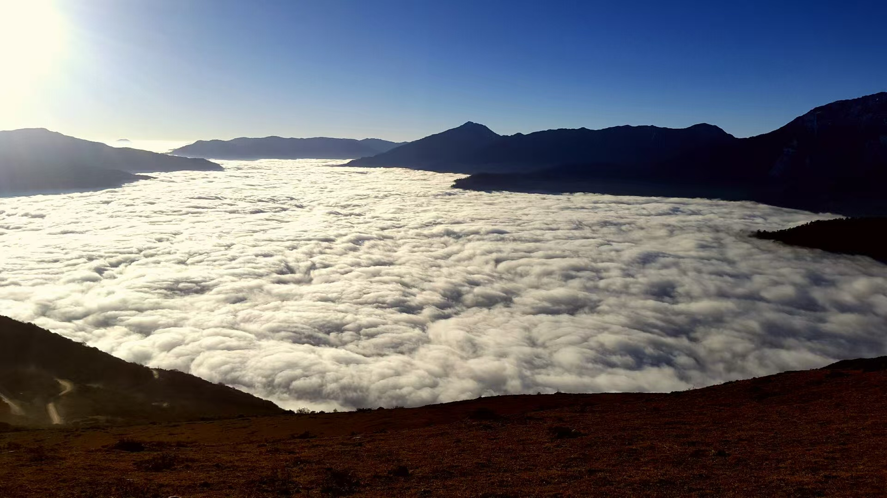
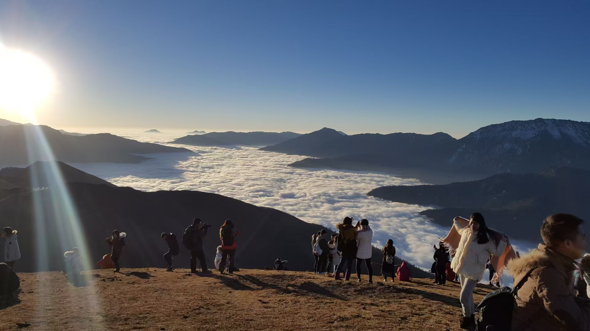
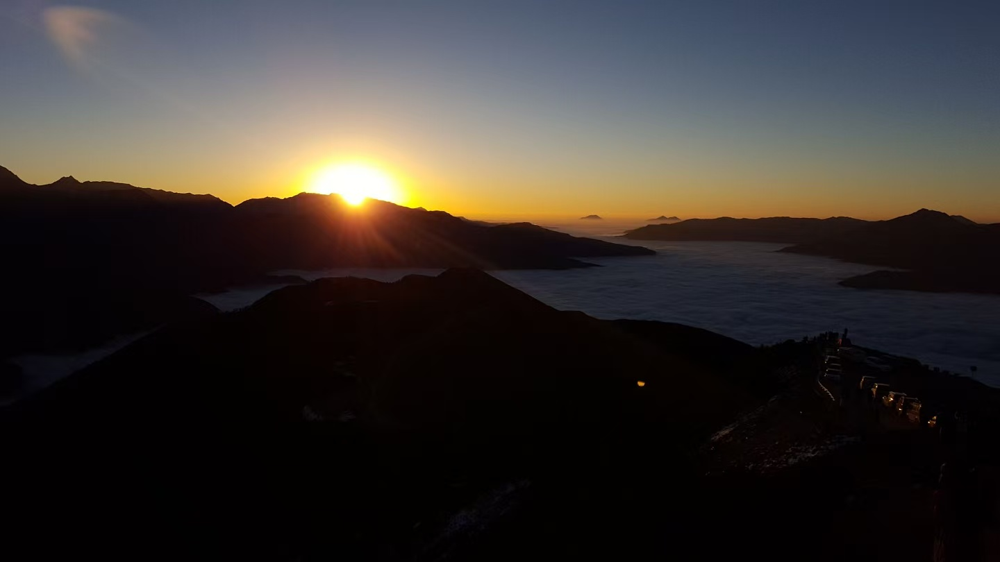
几段走出日常的路。照片里有好风景，也有没按计划收尾的故事。
2018 年去泰山看云海。要早起这件事确实有点难，但站在山上看到云层铺满眼前，远处的山从云里露出来，就觉得这一趟很值。太阳出来时，光落在云面上，场面比照片里还要开阔。那次没有什么曲折的故事，只记得云海很壮观，体验很好。



2023 年去川西，记得最深的是辽阔的草原和一路的好天气。天很高，云影落在草地上，车开在路上，抬头就能看到很远的地方。风景是真的好，意外也是真的：路上撞到一头牛，车受了损，最后只能叫拖车回来。这不是原本想要的旅行结局，却成了这趟行程最难忘的一部分。再看照片时，还是会先想起那片草原，然后才想起回程的折腾。
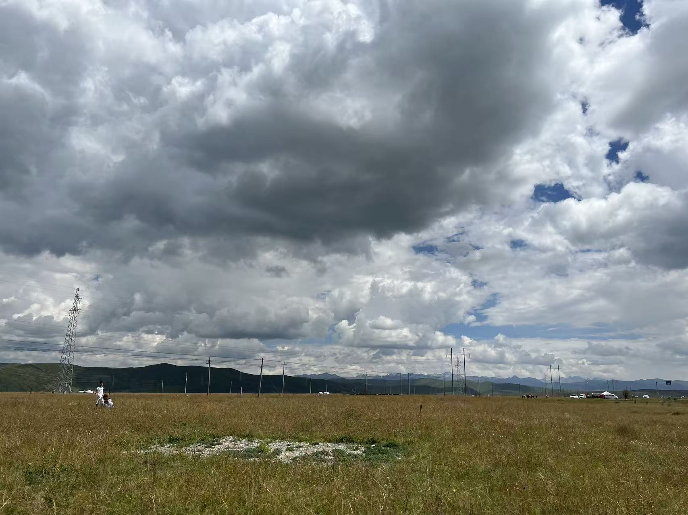
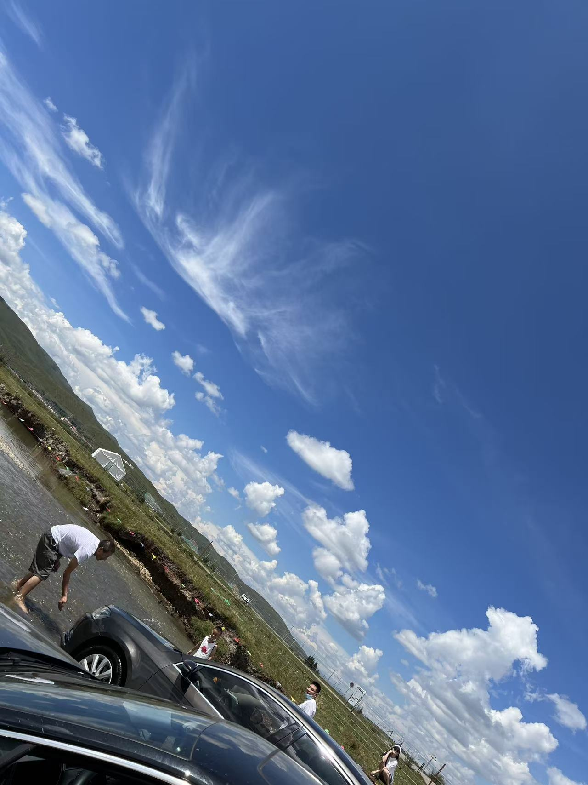
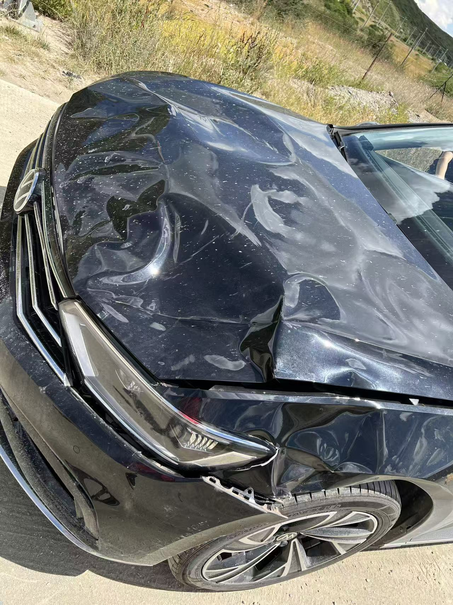
2025 年的三峡之旅，印象里是大山大水。坐上大船之后，看的不再只是一个景点，而是两岸的山和脚下的长江一点点往后退。还拿着十元人民币，对着画面拍了一张照片，算是给这次旅行留下一个有趣的记号。船行在江面上，能看到山势和水色不断变化；那种不赶时间、沿着长江往前走的感觉，我很喜欢。整体体验很好，也想把这些照片留在这里。
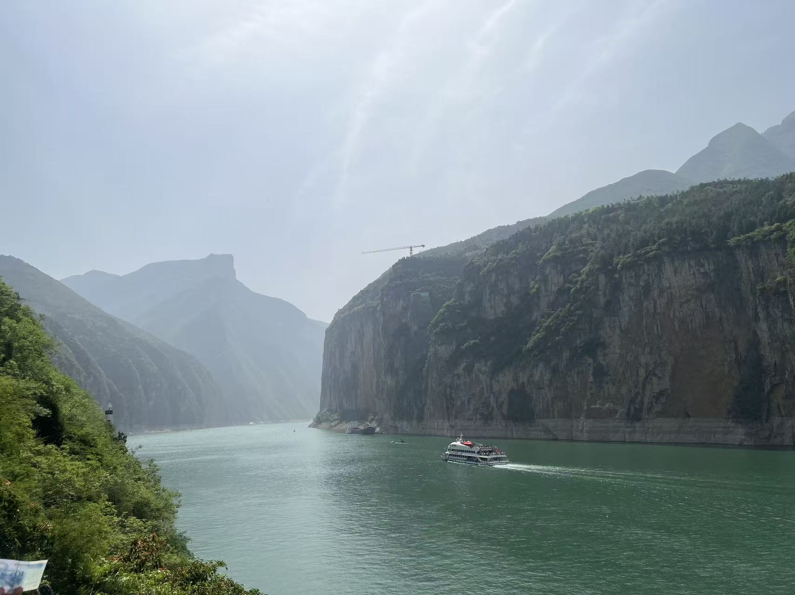
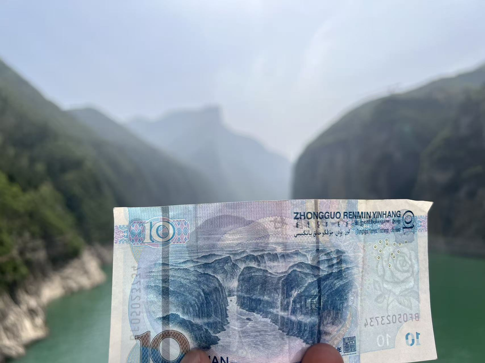
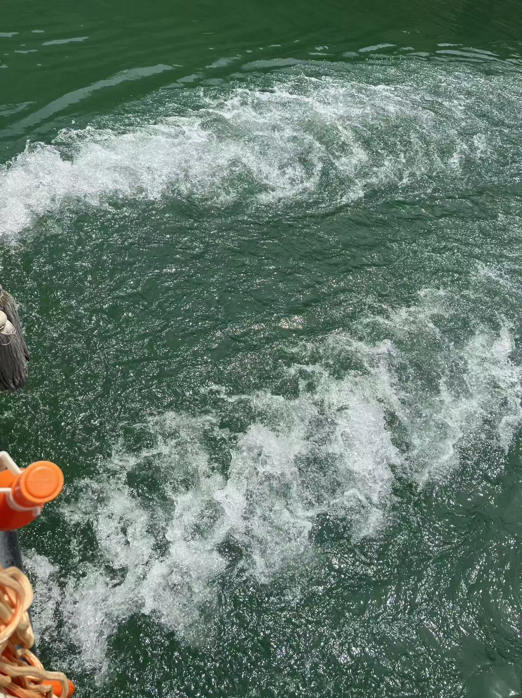
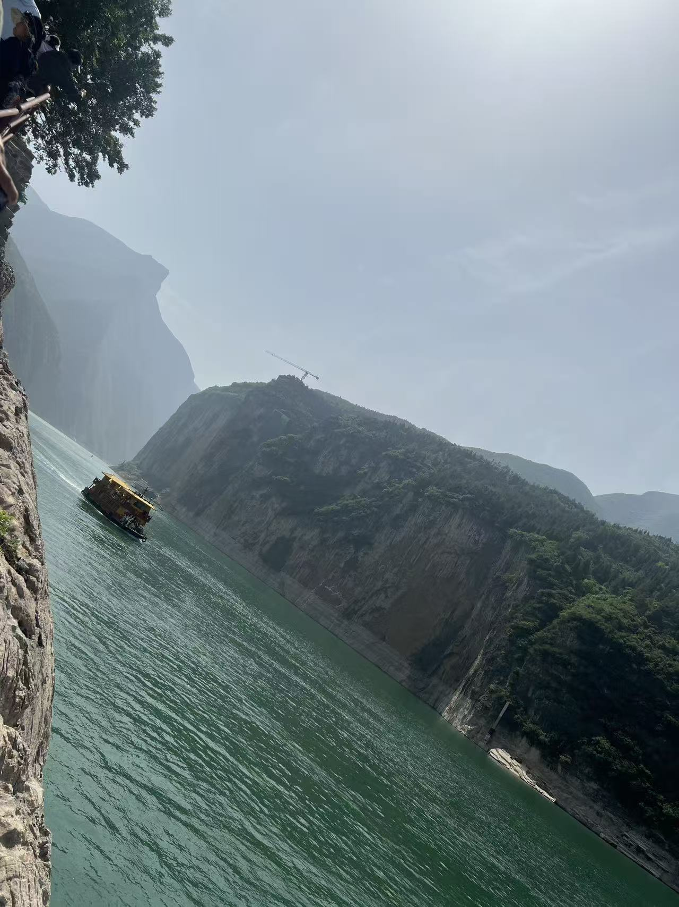
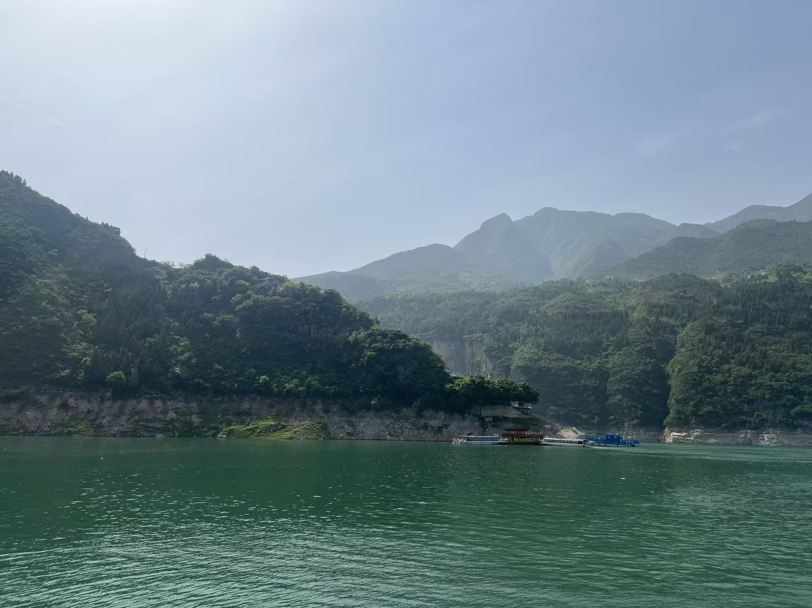
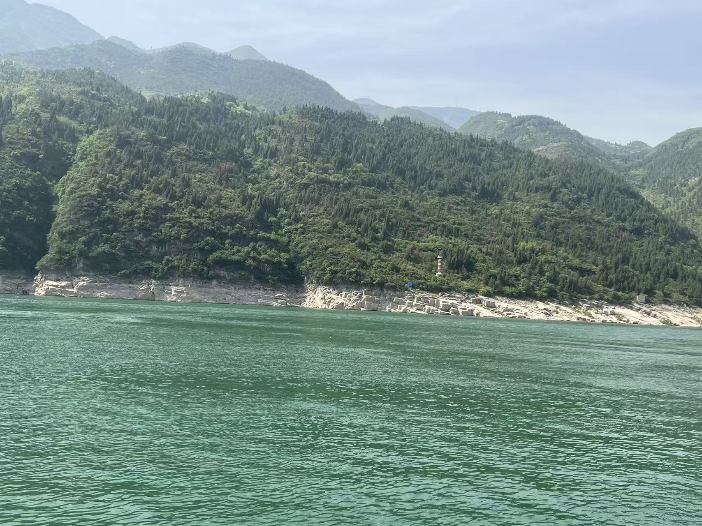